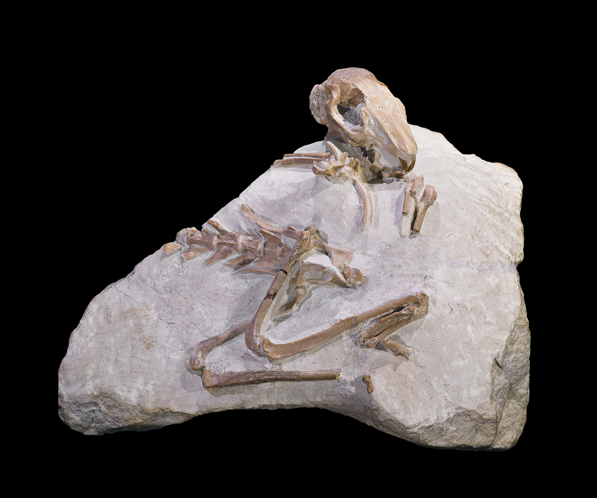

โลกแห่งฟอสซิล

ฟอสซิล คือ ซากหรือร่องรอยของสิ่งมีชีวิตในอดีตที่ถูกเก็บรักษาไว้ในชั้นหินเป็นเวลานานหลายพันปีจนถึงหลายล้านปี ฟอสซิลสามารถเกิดขึ้นได้จากซากพืช สัตว์ หรือสิ่งมีชีวิตชนิดต่าง ๆ เช่น กระดูก ฟัน เปลือกหอย รอยเท้า และร่องรอยการดำรงชีวิต
การศึกษาฟอสซิลช่วยให้นักวิทยาศาสตร์สามารถเรียนรู้เกี่ยวกับสิ่งมีชีวิตในอดีต รวมถึงสภาพแวดล้อมและภูมิอากาศของโลกในแต่ละยุค ฟอสซิลจึงเป็นหลักฐานสำคัญที่ช่วยให้เราเข้าใจวิวัฒนาการและประวัติความเป็นมาของโลก
